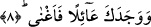

görüldüğü üzere senin peygamberlik öncesi bir yaşantın vardı. Nitekim Allah bu ifâde
ettiğimiz gerçeğe bir âyet-i kerimede şu şekilde değiniyor: “Mûsâ: Ben, dedi, o işi o
anda sonunun ne olacağını bilmeyerek yaptım” (Şuara, 26/20) Bu kelimenin
kullanıldığı bir başka âyet-i kerime şöyledir: “Şüphesiz ki babamız apaçık bir
yanlışlık içindedir” (Yusuf, 12/8) Âyetlerde bu kelimenin kullanılması peygamberler
hakkında dalal kelimesinin sehv yâni yanılma anlamına olduğuna dikkatlerimizi çekmek
içindir. Burada son olarak dalal kelimesinin isâet; yâni kötü bir fiil işleme anlamına
olmadığını bundan kaçınmak gerektiğini belirtmiş olalım.
“Sana yol göstermedi mi?” Yani sana apaçık kitaptan vahyettiklerinin arasında yer
alan şeriatlerinin yolunu gösterdi ve sana o zamana kadar bilmediğin şeyleri öğretti. Bu
nimetin son olarak zikredilen nimetten önceye alınması sebebsiz değildir. Çünkü bunun
başlangıcı yetimlik zamanından sonra mükellefiyet vaktidir. Zira Peygamber Efendimiz
(s.a.) o zamanlar doğru olan düşünce tarzına muvaffak kılınmıştı. Bundan dolayı
hayatında hiçbir zaman puta tapmamış ve hiçbir fuhşiyat işlememiştir.
el-Esile el-Mukhıme’de bu âyete şöyle mânâ veriliyor: O seni sapıkların arasında
bulup da onlara senin sayende doğru yolu, hidâyet yolunu göstermedi mi? Buna göre
“dalal” Peygamber Efendimiz’in değil, kavminin sıfatı olmuş olur. Buna örnek vardır,
nitekim Arapçada kavmi zayıf olan bir insan için “reculün daifun/zayıf adam” denilir.
et-Te’vilâtü’n-Necmiyye’de bu âyet şöyle tefsir olunur: O seni uluhiyyet çölünde
şaşırmış bulup da mahv, sükr, dalal ve hayretten sonra sahv sâyesinde mârifetin
kemaline erdirmedi mi? Nitekim buna bir âyet-i kerimede şu şekilde işâret buyurulur:
“Vallahi sen hala eski şaşkınlığındasın dediler.” (Yusuf, 12/95)
Kelimenin bu şaşırmışlık anlamına işâret olsun diye şöyle bir rivâyet aktarılır. İbn
Abbas (r.a.)’dan naklediliyor; Peygamber Efendimiz (s.a.) çocukken bir gün Mekke
vâdilerinden birinde yolunu şaşırıp, kaybolur. Dedesi Abdulmuttalib torununu
aramaktadır. Kâbe’ye giderek Beytullah’ın örtüsüne yapışıp şu duâyı okur:
Buldur bana ya Rabb! Muhammedimi,
Buldur da güçlendir oğlumla elimi!
Ancak Peygamber Efendimiz’i Ebû Cehil bulur ve Abdulmuttalib’e verir. Böylece
Allah Peygamber Efendimiz’i düşmanının eliyle kurtararak ihsanda bulunmuş olur. Bu
olay Fir’avn’ın Hz. Mûsâ (a.s.)’ı bebekken sepetin içinde bulmasına benziyor. Oysa bu
bebek ileride kendisine düşman ve tasa kaynağı olacaktı. Bu âyetin inmesi ile ilgili daha
bir çok sebebten söz edilir.